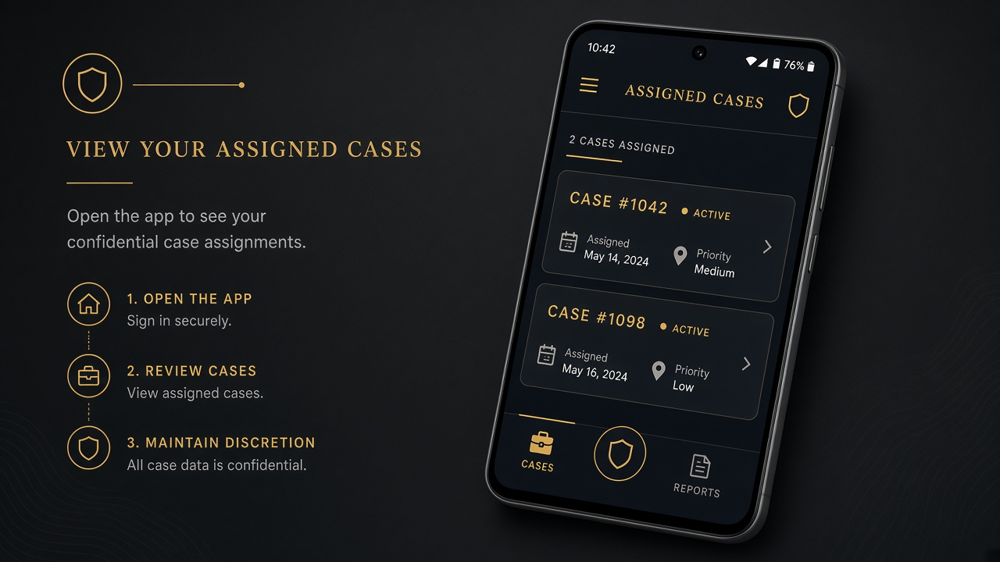
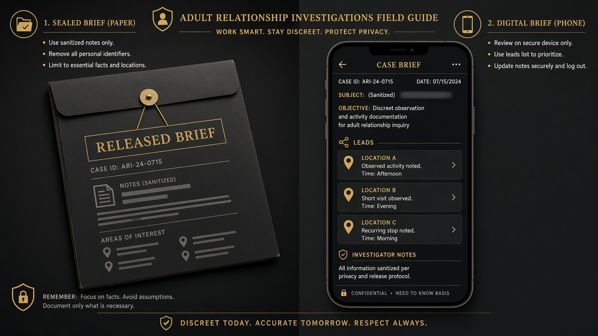
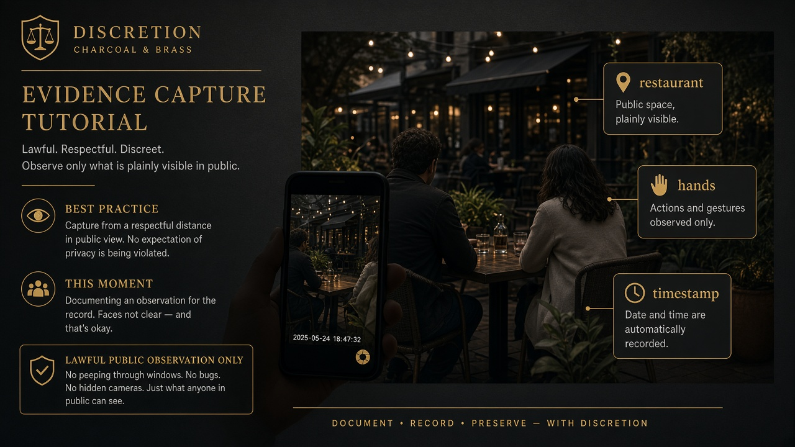
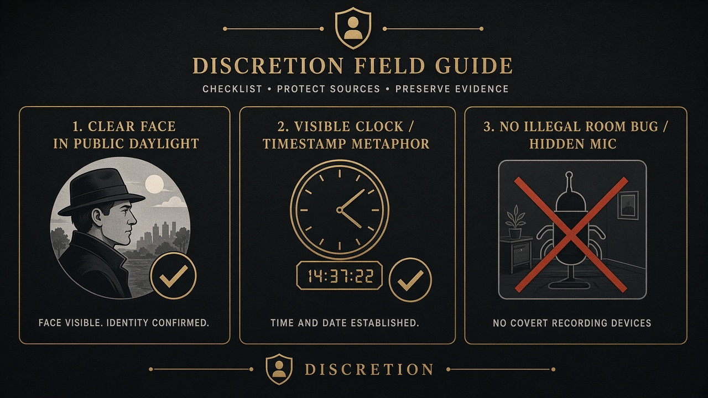
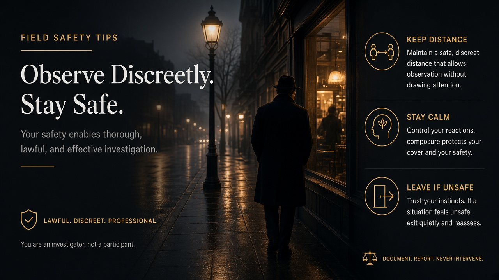

Field app · Schedule Helper · 18+
Investigator guide
Get Schedule Helper. Work assigned cases only. Capture clear evidence. Stay lawful, discreet, and safe.
Adults only. Discretion handles adult consensual-relationship and infidelity matters only. We do not investigate minors or predators. After your application is approved, you receive login details — there is no public Create account in the app.
Preview / debug APK · If Android blocks the install, allow installs from your browser or Files app · Sign in with credentials shared after approval
Get Schedule Helper
Install Schedule Helper (field access). After approval you receive a login — you only sign in. Do not use the Companion Notes build.
- Download the preview APK from the button above (or the latest GitHub Release).
- Open the file and install. If prompted, allow install from browser / Files.
- Sign in with the email and temporary password shared with you after approval.

Sign in — assigned cases only
There is no public Create account in the app. After your field application is approved, you receive credentials. You only see cases assigned to you.
- Use email/password on the Schedule Helper sign-in screen.
- After sign-in you only see cases assigned to you.
- Clients never see your name — they see “Case team.”
- Open Earnings in the app to track approved payouts in GYD.
Open a case & read the brief
Open an assigned case. Read the released client brief and leads sanitized for the field — not raw client private notes unless released.
- Confirm locations, timeline, and subject identifiers in the brief.
- Ask Case team if a lead is unclear — do not invent facts.
- Work only what was assigned; unassigned cases never appear.

Capture evidence
Upload photos or video from gallery, camera, or video record. Tag captures for court-oriented proof (examples: hands, kiss, restaurant, lodging, ID clarity).
- Prefer clear public observations with usable faces and context.
- Keep notes factual: time, place, what was observed — not speculation.
- Uploads go to secure storage; clients do not see them until approved and unlocked.
- Higher-proof tags (e.g. hotel patterns) can unlock higher earnings — see earn.

What to look out for
- Clear faces when identity is the point of the capture.
- Timestamps / context — date, place, and sequence help the Court Package.
- Lawful public observation only — sidewalks, public venues, open spaces.
- No illegal room bugs, hidden mics, trespass, or private-property intrusion.
- Identity hidden from client — never identify yourself to the client or subject as “their investigator.”
- Wait for approval — pending review is normal; do not expect instant client visibility.
- Rejected = re-capture — read the rejection reason, fix framing/quality, upload again.

Discreet field tips
- Blend in; keep distance; leave if you feel unsafe.
- Do not confront the subject, third parties, or the client in the field.
- One job: observe, document, upload — Case team handles unlock and client communication.
- Protect your own privacy: no case talk in public, no posting about active work.

Ready to join?
Review earnings in GYD, then apply. Adults 18+ · lawful public observation only.